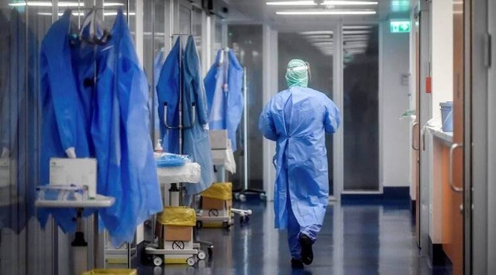
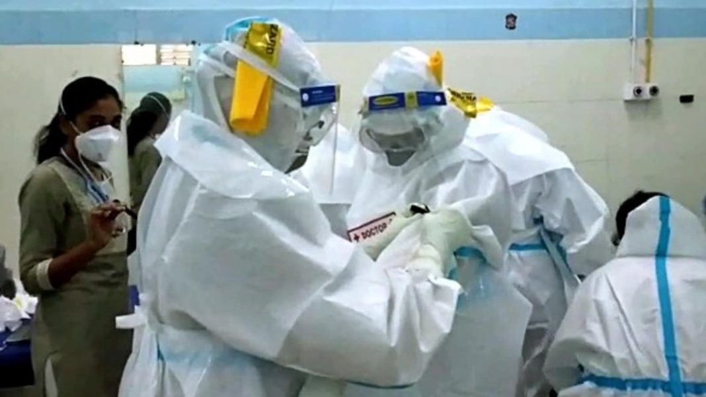
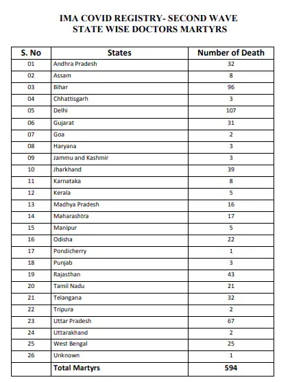
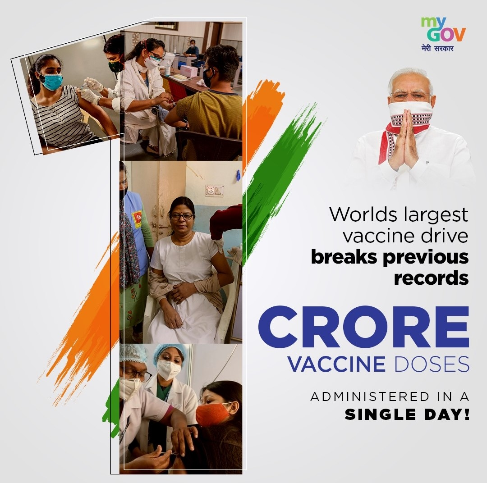

747 doctors died of Covid-19 in India: IMA
According to the IMA registry, the highest number of such deaths were reported from Tamil Nadu (89) and West Bengal (80).
The national registry of Indian Medical Association (IMA) shows that 747 doctors have died of Covid-19. Dr Jayesh Lele, secretary general of IMA, told The Indian Express that according to their registry, the highest number of such deaths were from Tamil Nadu (89) and West Bengal (80).
The IMA did a state-wise analysis of deaths due to Covid-19 recently and, according to their data, there were 74 doctors who died in Maharashtra while another 70 died in Andhra Pradesh. Sixty-six doctors have died in Uttar Pradesh and 68 in Karnataka, while 62 have succumbed to the infection in Gujarat. Forty doctors have died in Bihar while 22 each in Delhi and Madhya Pradesh. According to the IMA registry, 20 doctors each have died in Assam and Punjab.
An analysis by the state health department shows that to date, in Maharashtra, 17, 975 health workers have been infected with Covid-19, of which 11,235 are from government hospitals while 6,740 are from the private sector.
A total of 178 health workers have died of the infection in Maharashtra, said state surveillance officer Dr Pradeep Awate. Of these, 107 had been reported from government-run healthcare facilities while 71 were from private facilities, he added.
Out of 5,913 doctors infected with Covid-19 in the state, 3,095 are from government healthcare facilities. A total of 4,217 nurses have been infected, out of which 2,649 are from government-run facilities, Dr Awate said. The remaining 7,845 are mainly paramedical workers and others.
Published on April-17 2021
India lost 594 doctors during Covid second wave; most deaths in Delhi: IMA
The data shared by IMA showed that as many as 107 doctors had died in Delhi during the second wave of the coronavirus disease (Covid-19) pandemic. Bihar saw the deaths of 96 doctors, while 67 died in Uttar Pradesh, 43 in Rajasthan, and 39 in Jharkhand, too.
The Indian Medical Association (IMA) on Wednesday said that 594 doctors died during the more infectious second wave of the coronavirus disease (Covid-19) pandemic in the country. A chart showing the state-wise distribution of the fatalities in India was published by the organisation, and shared by news agency ANI on social media.
Of the 594 doctors who died of Covid-19 during the second wave of the pandemic, the most were in the national capital, Delhi, which became one of the worst-hit hotspots in India during this phase, the data showed. Bihar, Uttar Pradesh, Rajasthan, and Jharkhand were close on their heels, with all of these states witnessing the deaths of scores of doctors during the second wave of Covid-19.
The data shared by IMA showed that as many as 107 doctors had died in Delhi during the second wave. Bihar saw the deaths of 96 doctors, while 67 died in Uttar Pradesh, 43 in Rajasthan, and 39 in Jharkhand, too. However, the IMA being a voluntary organisation of physicians in India, it is possible that the actual number of fatalities far exceeds these statistics, since the association only keeps a record of its 3.5 lakh members, out of the 12-lakh-odd doctors in the country
The IMA data, however, provides a reliable approximation of the physician community's plight in India, in the wake of the Covid-19 pandemic. The five states which saw the highest number of deaths of doctors during this phase, according to the IMA, are:
1. New Delhi(107)
2. Bihar(96)
3. Uttar pradesh(67)
4. Jharkhand(39)
5. Andhra Pradesh(32)
The entire IMA Covid registry pertaining to the doctors' deaths can be found here:
On a related note, the IMA has also recently raised its voice against violent incidents directed against doctors, healthcare staff, and healthcare establishments with or without reason. These incidents of healthcare violence have increased over the years and have become widespread and pose threat to the medical practice, it said.
The IMA has urged Union home minister Amit Shah to consider its appeal on an emergency basis and implement an effective and strong law "against healthcare violence", to safeguard the healthcare professionals of the country.
Published on June-2 2021
India achieves milestone of over 1 crore COVID-19 vaccinations on August 27
With this, not only did India achieve a landmark of the highest number of COVID-19 vaccine doses administered in a day but also achieved its highest ever weekly vaccination figure of nearly 4.5 Crore doses from August 21 to 27.
India achieved its highest daily vaccination and achieved the milestone of administering one core COVID-19 vaccine doses in one day for the first time on August 27. As many as 1,00,64,032 doses of coronavirus vaccine were administered today.
Uttar Pradesh, Maharashtra, and Madhya Pradesh have seen maximum vaccinations this month. In Uttar Pradesh, nearly 2.15 crore doses have been administered this month so far, followed by 1.3 in Madhya Pradesh and nearly 1.1 crore doses in Maharashtra. Special vaccination campaigns are conducted in both Madhya Pradesh and Uttar Pradesh, which might have boosted vaccination numbers in these two states.
That apart, August has been India’s biggest vaccination month vis-à-vis the number of COVID-19 vaccine doses administered with over 15 crore doses given so far-- higher than 13.45 crore doses administered in July and 11.97 crore doses in June.
Notably, almost 10 crore COVID-19 vaccine doses out of the 15 crore doses administered this month were given to the 18-44 age group beneficiaries and almost 11 crore doses were first doses.